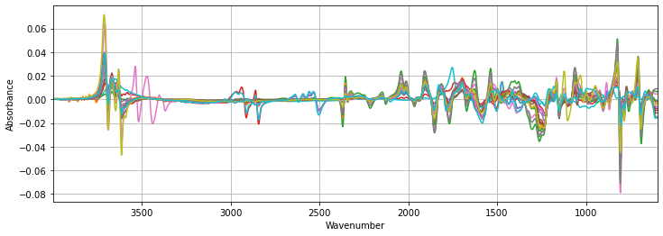
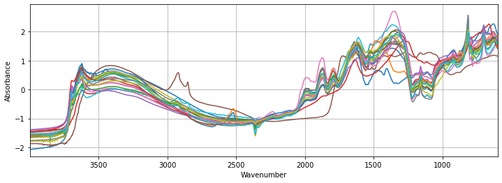
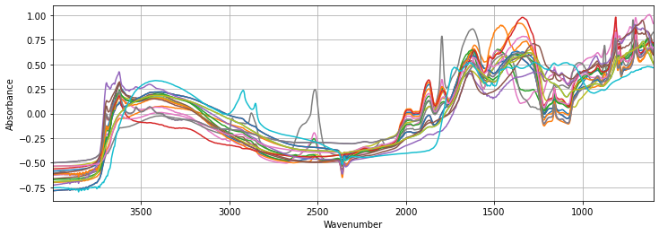
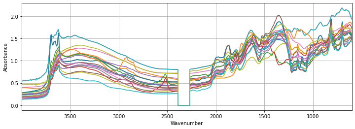

src_dir = 'test'
fnames = ['spectra-features-smp.npy', 'spectra-wavenumbers-smp.npy',
'depth-order-smp.npy', 'target-smp.npy',
'tax-order-lu-smp.pkl', 'spectra-id-smp.npy']
X, X_names, depth_order, y, tax_lookup, X_id = load_kssl(src_dir, fnames=fnames)Transform
Utility function to transform features and target
Target variable
log_transform_y
log_transform_y (data:tuple)
Log-10 transform of the target value
Takes and returns all (X, y, X_id, depth_order) tuple to be able to pipe the function
| Type | Details | |
|---|---|---|
| data | tuple | (X, y, X_id, depth_order) |
Features (spectra)
TakeDerivative
TakeDerivative (window_length=11, polyorder=1, deriv=1)
Creates scikit-learn derivation custom transformer
Args: window_length: int, optional Specify savgol filter smoothing window length
polyorder: int, optional
Specify order of the polynom used to interpolate derived signal
deriv: int, optional
Specify derivation degreeReturns: scikit-learn custom transformer
tfm = TakeDerivative()
plot_spectra(tfm.fit_transform(X), X_names, figsize=(12,4))
SNV
SNV ()
Creates scikit-learn SNV custom transformer
Args: None
Returns: scikit-learn custom transformer
tfm = SNV()
plot_spectra(tfm.fit_transform(X), X_names, figsize=(12,4))
class Center(BaseEstimator, TransformerMixin):
"""Creates scikit-learn Centering custom transformer
Args:
None
Returns:
scikit-learn custom transformer
"""
def __init__(self):
pass
def fit(self, X, y=None):
return self
def transform(self, X, y=None):
return X - np.mean(X, axis=1).reshape(-1, 1)tfm = Center()
plot_spectra(tfm.fit_transform(X), X_names, figsize=(12,4))
DropSpectralRegions
DropSpectralRegions (wavenumbers, regions=[2389, 2269])
Creates scikit-learn custom transformer dropping specific spectral region(s)
Args: wavenumbers: list List of wavenumbers where absorbance measured
regions: list
List of region(s) to dropReturns: scikit-learn custom transformer
tfm = DropSpectralRegions(X_names, regions=CO2_REGION)
plot_spectra(tfm.fit_transform(X), X_names, figsize=(12,4))